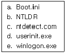
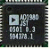
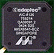
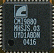
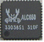
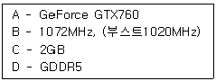
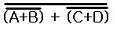
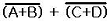
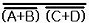
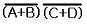

PC정비사-1급 (2014-04-06 기출문제)
1과목: PC운영체제
1. 소프트웨어 개발 회사에서 새로운 소프트웨어를 개발하여 시장 출시 전에 제품에 대한 문제점이나 의견 수렴을 위해 "소프트웨어의 전체 기능을 일반 사용자에게 무료로 일정 기간 사용하도록 하는 것"을 나타내는 것은?
- Freeware
- Demo Version S/W
- Beta Version S/W
- Shareware
(정답률: 62%)

2. 네트워크 운영체제에 대한 설명 중 잘못된 것은?
- 네트워크는 다양한 하드웨어와 전송매체로 구성되므로 이들 다양한 장치들을 통합 조정하여 네트워크를 원활히 사용할 수 있도록 하는 소프트웨어 시스템을 의미한다.
- 예전에는 운영체제와 별도로 공급되어 왔으나 최근에는 운영체제 내부에 포함된 추세이다.
- Windows XP 및 Windows 2003 등은 네트워크 운영기능을 갖는 운영체제이다.
- Novell Netware는 네트워크 운영기능은 물론 시스템 운영기능 까지 갖춘 차세대 네트워크 운영체제이다.
(정답률: 41%)
3. 리눅스에서 ‘test’라고 하는 파일 내에 ‘ICQA’라는 단어를 찾기 위한 명령은?
- grep test ICQA
- grep ICQA test
- find -name ICQA test
- find -name test ICQA
(정답률: 45%)
4. 마우스가 정상적으로 동작하지 않을 때 키보드만을 이용하여 작업 전환을 하는 여러 가지 방안에 대한 설명 중 잘못된 것은?
- Alt+Tab키를 누른 후 작업리스트 창에서 Alt키를 누른 상태에서 Tab키를 이용하여 원하는 작업 위치로 이동하여 전환한다.
- Ctrl+W키를 이용하면 비 활성화된 모든 창을 한꺼번에 활성화 시킬 수 있다.
- Alt+Esc키를 이용하면 창을 연 순서대로 창을 하나씩 활성화 시킬 수 있다.
- 전체화면모드로 이용하던 Internet Explorer을 창 모드로, 또는 창 모드로 이용하던 프로그램을 전체화면 모드로 전환하기 위해서는 Alt+Enter를 누르면 된다.
(정답률: 50%)
5. Windows XP Professional에 관한 설명 중 틀린 것은?
- Windows NT와 Windows 2000의 검증된 코드기반 위에구축되었기 때문에 보다 직관적인 사용자 환경은 물론 신뢰성 있는 비즈니스 컴퓨팅을 보장한다.
- x86 아키텍처를 기반으로 설계되었다.
- 최대 2GB RAM과 대칭형 멀티프로세서 2개를 지원할 수있다.
- 기존 Windows 2000 Active Directory 환경에 완벽하게 통합되며, 아울러 수백개에 달하는 새로운 시스템 정책들을 보여준다.
(정답률: 57%)
6. 운영체제 중 일반적으로 Server용으로 사용되는 운영체제로만 바르게 짝지어진 것은?
- Linux, Windows NT, Windows 2003 Server, Netware
- Linux, Windows NT, Windows XP, Netware
- Windows ME, Windows XP, Linux, Windows NT
- Windows ME, Windows XP, Linux, Mac OS
(정답률: 73%)
7. Windows XP의 부팅과 관련된 파일들이다. 부팅 과정에서 사용되는 순서대로 나열된 것은?

- a - b - c - d - e
- b - c - a - d - e
- b - a - c - e - d
- a - e - c - b - d
(정답률: 54%)
8. 제어판에서 제공되는 디스플레이 등록 정보에 대한 설명으로 올바른 것은?
- Windows가 인식한 하드웨어의 목록과 드라이버를 볼 수 있다.
- 마우스의 포인터 모습과 기능을 설정할 수 있다.
- 해상도와 색상수를 지정할 수 있다.
- 여러 명의 사용자가 하나의 컴퓨터 사용 시 각자 서로 다른 Windows 환경을 조성할 때 사용된다.
(정답률: 50%)
9. Windows XP에서 공유 폴더 설정에 대한 설명 중 잘못된 것은?
- 최대 100명 까지 접근을 허용할 수 있다.
- 공유된 폴더에 접근 할 수 있는 그룹 및 사용자를 지정 할 수 있다.
- 명령 프롬프트에서 'net share'명령으로 컴퓨터의 공유된 전체 폴더를 확인할 수 있다.
- 관리 목적으로 공유된 경우 사용 권한을 설정할 수 없다.
(정답률: 47%)
10. 다음 중 Windows XP를 사용하기에 부적절한 시스템은?
- VIA C3 느헤미야, 2GB 메모리
- 인텔 G3220, 1GB 메모리
- AMD 애슬론 XP 3200, 2GB 메모리
- SUN사의 ULTRASPARC-2 1.4GHz, 2GB 메모리
(정답률: 52%)
11. Windows XP의 명령 프롬프트 창에서 컴퓨터의 ‘장치관리자’를 실행 시키려고 한다. 이에 해당하는 명령은?
- Dfrag.msc
- Devmgmt.msc
- Msconfig.exe
- Rsop.msc
(정답률: 50%)
12. Windows XP의 관리 도구에 대한 설명이다. 각 서비스 파일이 올바르게 연결된 것은?
- Alerter - 선택된 사용자와 컴퓨터에 관리 경고를 알린다. 서비스가 중지되면 관리 경고를 사용하는 프로그램에서 관리 경고를 받지 않게 된다.
- Application Layer Gateway Service - 프로그램을 설치하거나 삭제하는 일을 한다. 이 서비스를 멈추게 하면 응용프로그램을 설치하거나 삭제할 수 없다. 초기 값 수동을 그대로 두어야 하는 서비스다.
- Application Management - 네트워크에 있는 모든 컴퓨터의 목록을 업데이트하고 관리하며, 이 목록을 브라우저로 지정된 컴퓨터에 제공한다.
- Automatic Updates - 인터넷 연결 공유나 인터넷 연결 방화벽을 쓸 때 필요하다. Windows XP가 기본으로 내장한 방화벽 서비스를 쓸 때는 수동이나 자동으로 설정돼 있어야 한다.
(정답률: 45%)
13. Windows XP의 [네트워크 - 로컬 영역 속성]에서 추가 가능한 네트워크 구성요소의 유형으로 잘못된 것은?
- 클라이언트
- 서비스
- 어댑터
- 프로토콜
(정답률: 52%)
14. Windows XP에서 현재 내 컴퓨터와 연결되었거나 연결될 목록을 프로토콜과 함께 보여주는 명령어로 올바른 것은?
- gpedit
- msconfig
- system
- netstart
(정답률: 59%)
15. Windows 계열의 운영체제 중 IIS(인터넷 정보 서비스)를 운용할 수 없는 것은?
- Windows 2003
- Windows NT
- Windows XP Professional
- Windows XP Home Edition
(정답률: 46%)
2과목: PC주변기기
16. PCI BUS의 특징 중 잘못된 것은?
- Peripheral Component Interface의 약자
- Plug & Play 지원이 안된다.
- Device를 최대 10개까지 접속 가능
- 32Bit/64Bit Data폭 지원
(정답률: 61%)
17. 아래 그림은 S-ATA 하드디스크에 전원공급을 위한 젠더이다. 아래 그림의 젠더를 사용해서 전원을 공급했을때, 사용되지 않는 전압은?
- +3V
- +12V
- +5V
- GND
(정답률: 50%)
18. 사용자와 가장 가까이 있고 데이터의 송수신을 컨트롤하는 핵심장비이며, 네트워크에서는 수백~수천 바이트의 데이터를 하나로 묶어 패킷 단위로, 데이터를 빠른 속도(이더넷 표준 10Mbps)로 전송하는 장비는?
- NIC
- Router
- Bridge
- Switch
(정답률: 46%)
19. 다음은 전자 악기간의 디지털 신호에 의한 통신 또는 컴퓨터와 전자 악기간의 정보를 교환하기 위해 결정된 국제 표준 규약인 MIDI를 설명한 것이다. 잘못된 것은?
- 기본적으로 4채널을 사용하여 각 악기의 상태나 컨트롤 등을 전달한다.
- MIDI는 Musical Instrument Digital Interface의 약어이다.
- 별도의 인터페이스 카드가 필요하며 PC 사운드 카드에서 기본적으로 인터페이스를 지원한다.
- General MIDI는 사운드 폰트 MIDI에서 사용하기 위한 소리를 담는 데이터를 의미한다.
(정답률: 39%)
20. 시리얼 방식의 인터페이스가 아닌 것은?
- USB
- IEEE-1394
- SATA
- IDE
(정답률: 39%)
21. 다음 그림 중 메인보드에 내장된 사운드 코덱 칩셋(Chipset)이 아닌 것은?




(정답률: 49%)
22. USB에 대한 설명으로 잘못된 것은?
- 하나의 주 컨트롤러에 최대 127개까지 연결할 수 있다.
- USB의 전원 공급 기능을 이용하여 충전 용도로도 사용된다.
- 컴퓨터가 USB 2.0 버전만 지원하더라도 USB 3.0 버전의 외장 하드 디스크를 사용 가능하다.
- USB 케이블을 통해 3V의 전원이 공급된다.
(정답률: 67%)
23. PCI-Express x16 Bus의 최대 전송 속도는?
- 33MB/초
- 8GB/초
- 66MB/초
- 100GB/초
(정답률: 65%)
24. 스캐너로 입력받은 문서의 내용을 텍스트로 변경하는 기기를 나타내는 용어는?
- OCR
- 디더링
- 캡처
- CAD
(정답률: 63%)
25. 웜부팅(Warm-Booting)에 관한 설명으로 올바른 것은?
- 자체 진단 과정을 수행하지 않는다.
- 컴퓨터에 전기적 충격이 쿨부팅(Cool-Booting)에 비해 크다.
- 쿨부팅보다 부팅속도가 느리다.
- 전원스위치를 껐다 켜야 한다.
(정답률: 38%)
26. CPU, 혹은 그래픽 칩에서 발생하는 열을 제대로 냉각시키지 못하면 치명적인 고장을 일으키게 된다. 이 때문에 요즘 메인보드는 LM모듈을 탑재해 쿨링팬의 회전상태나 회전속도를 감시하는 기능이 있다. 팬의 회전속도를 감지할 수 있는 쿨링팬의 배선 수는?
- 1
- 2
- 3
- 4
(정답률: 46%)
27. CPU 성능 평가 지표가 아닌 것은?
- 클럭속도
- 캐시 메모리
- 집적도
- RAM속도
(정답률: 69%)
28. 다음은 어느 회사의 그래픽 카드 성능에 대한 내용이다. 각각의 내용에 대한 의미를 A, B, C, D 순서대로 올바로 설명한 것은?

- 칩셋 이름 - 코어 클럭 - 비디오램 용량 - 비디오램 타입
- 비디오램 타입 - 램댁 속도 - 비디오램 용량 - 칩셋 이름
- 비디오램 타입 - 비디오램 용량 - 램댁 속도 - 칩셋 이름
- 칩셋 이름 - 비디오램 용량 - 램댁 속도 - 비디오램 타입
(정답률: 56%)
29. 프린터 전송방식 중 MS와 HP에서 개발한 것으로, 양방향 통신이 가능하여 프린터의 재원과 상태를 PC에 알려줌으로써 자동으로 프린터를 제어할 수 있는 방식은?
- 호환 모드
- SPP 모드
- ECP 모드
- 니블 모드
(정답률: 57%)
30. 마우스에 대한 설명으로 옳은 것은?
- 2버튼식은 초기 매킨토시에서 사용되던 것으로 애플 마우스라 불린다.
- 시리얼식은 병렬 포트로 연결되며, USB 방식은 확장 슬롯에 직렬로 연결된다.
- 감도의 단위는 DPI이며 모니터 화면에서 1인치를 움직일 때 몇 개의 도트(픽셀)를 이동하는지를 말한다.
- 버튼의 종류에 따라 레이저, 적외선, 광 마우스 등으로 나눌 수 있다.
(정답률: 53%)
3과목: 디지털 논리회로
31. 10진수 10을 2진수로 표현하기 위하여 필요한 Bit 수는?
- 1 Bit
- 2 Bit
- 3 Bit
- 4 Bit
(정답률: 57%)
32. 다음 플립플롭 중 토글(toggle) 동작이 가능한 것은?
- RS Flip-Flop
- JK Flip-Flop
- D Flip-Flop
- 에지 트리거드 D Flip-Flop
(정답률: 44%)
33. 다음 중 카운터에 대한 설명으로 옳지 않은 것은?
- 링카운터는 카운터 기능과 디코더 기능을 갖는다.
- 존슨 카운터는 링 카운터의 일종이다.
- 리플카운터는 대표적인 동기식 카운터이다.
- 일반적으로 비동기식 카운터는 동기식에 비해 속도가 느리다.
(정답률: 27%)
34. 논리식 X=(A+B)(C+D)를 NOR게이트 형식으로 바꾸려 한다. 옳은 표현식은?




(정답률: 45%)
35. Access Time이 가장 빠른 기억 장치는?
- Magnetic Drum
- Static RAM
- Magnetic Disk
- Magnetic Tape
(정답률: 64%)
4과목: PC유지보수
36. CPU가 CAS/RAS 에 신호를 보내어 메모리의 정보가 도착할 때까지의 시간을 나타내는 용어는?
- Lead
- Delay
- Latency
- Integrity
(정답률: 43%)
37. CPU가 64비트로 업그레이드 되었다는 것은 무엇을 의미하는가?
- 외부버스 : 64비트, 내부버스 : 32비트
- 외부버스 : 32비트, 내부버스 : 64비트
- 외부버스 : 32비트, 내부버스 : 32비트
- 외부버스 : 64비트, 내부버스 : 64비트
(정답률: 65%)
38. 컴퓨터를 켜면 처음에는 아무 문제가 없으나 몇 분이 지나면 시스템이 멈추는 현상이 나타난다. 전원을 끄고 잠시 후 다시 켜면 부팅은 되지만 역시 같은 증상이 반복된다. 원인으로 보기에 타당한 것은?
- CPU의 냉각팬이 고장나 CPU의 열을 식혀주지 못한다.
- 메인보드의 BIOS 배터리가 방전되었다.
- 그래픽카드의 해상도가 너무 높게 설정되었다.
- 사운드 카드 드라이버가 손상된 것이 원인이다.
(정답률: 60%)
39. 회로시험기의 레인지를 DCV에 놓고 파워서플라이를 측정하려고 한다. 사용 용도로 가장 올바른 것은?
- 입력 전압이 올바른지 확인할 때 사용
- 출력 전압이 올바른지 확인할 때 사용
- 연결선의 단선 여부를 확인할 때 사용
- 출력 전류 값이 올바른지 확인할 때 사용
(정답률: 58%)
40. Norton Ghost에 대한 설명으로 잘못된 것은?
- 압축 수준 선택을 통해 백업을 할 수 있다.
- 원본데이터 크기보다 복제할 디스크의 크기가 작아도 된다.
- 하드디스크 전체를 이미지로 만들어 백업해 주는 유틸리티이다.
- 노턴 고스트의 경우, 병렬포트를 이용하여 두대의 컴퓨터를 연결하여 작업할 수 있다.
(정답률: 52%)
41. 시스템의 부팅 속도가 느려지는 원인으로 잘못된 것은?
- 램(RAM)에 기록된 파일의 단편화 심화
- 하드디스크 파일의 단편화 심화
- CMOS Setup에서의 Cache가 disable로 설정
- 바이러스 감염
(정답률: 61%)
42. Windows XP 복구 콘솔에서 boot.ini 복구를 위해 사용하는 명령으로 올바른 것은?
- bootcfg /config
- bootcfg /setup
- bootcfg /make
- bootcfg /rebuild
(정답률: 45%)
43. 파티션에 대한 설명 중 잘못된 것은?
- 리눅스 파티션은 최대 4개까지 나눌 수 있다.
- 윈도우 파티션의 크기는 MB 단위로 입력할 수 있다.
- 파티션의 크기는 전체 하드디스크의 '%'로 지정할 수 있다.
- 파티션을 나눈 후, 포맷을 해야 사용할 수 있다.
(정답률: 46%)
44. 아래 에러 메시지는 컴퓨터 부팅 시 나타나는 것들이다. 이들 중 성격이 다른 하나는?
- Parity Error
- Base 64KB Memory Failure
- 8042-Gate A20 Failure
- Refresh Failure
(정답률: 41%)
45. 전자파에 관련된 인증 마크가 아닌 것은?
- EMC
- FCC
- CE
- KGMP
(정답률: 40%)
46. LCD(Liquid Crystal Display) 모니터의 휘도(밝기)를 나타내는 단위는?
- bps
- DPI
- MHz
- cd/㎡
(정답률: 52%)
47. Standard CMOS Setup에서 Halt On에 대한 설명으로 올바른 것은?
- All, But Keyboard - 키보드 오류에 대해서만 POST를 멈추지 않는다.
- All Errors - 어떤 에러가 발생해도 POST를 계속 진행한다.
- No Errors - 바이오스가 비치명적인 에러 검출 시 POST를 중지하고 알려준다.
- No, But Keyboard - 키보드 오류에 대해서만 POST를 멈추지 않는다.
(정답률: 54%)
48. POST 과정의 순서가 바르게 나열된 것은?
- 시스템 버스 테스트 - 그래픽 카드 테스트 - 메모리 테스트 - 키보드 테스트 - 디스크 테스트 - P&P 기능 동작 - CMOS 내용확인 - DMI 기능 동작
- DMI 기능 동작 - 그래픽 카드 테스트 - 메모리 테스트 - 키보드 테스트 - 디스크 테스트 - P&P 기능 동작 - CMOS 내용확인 - 시스템 버스 테스트
- 시스템 버스 테스트 - P&P 기능 동작 - 메모리 테스트 - 키보드 테스트 - 디스크 테스트 - 그래픽 카드 테스트 - CMOS 내용확인 - DMI 기능 동작
- 시스템 버스 테스트 - CMOS 내용확인 - 그래픽 카드 테스트 - 메모리 테스트 - 키보드 테스트 - P&P 기능 동작 - 디스크 테스트 - DMI 기능 동작
(정답률: 41%)
49. 다음 중 소켓 775에 장착 가능한 CPU는?
- 울프데일 8400
- I3-550 클락데일
- A10 5800K
- FX 8300
(정답률: 52%)
50. 메인보드의 각종 입출력 단자를 외장 시디롬, 스피커, 마우스, 등과 연결하기 위해 사용하는 것은?
- 백 패널(Back Panel)
- 스페이서(Spacer)
- 서플라이(Supply)
- 커넥터(Connector)
(정답률: 57%)
5과목: PC네트워크
51. LAN 구간에서 현재 서버와 클라이언트간의 통신이 정상적으로 이루어지는지 확인하고 싶을 때 사용할 수 있는 방법으로 잘못된 것은?
- ipconfig 명령어를 사용해 확인한다.
- ping 명령어를 사용해 확인한다.
- 실행메뉴에서 "\\서버_이름" 으로 검색한다.
- 네트워크 환경에서 서버를 검색한다.
(정답률: 61%)
52. 패킷 스위칭 방식의 설명으로 잘못된 것은?
- 패킷 단위로 데이터 전송이 일어난다.
- 메시지를 일정 크기로 자른 것을 패킷이라 한다.
- Store-and-Forward 방식을 이용한다.
- 많은 양의 정보를 연속으로 보낼 때 유효한 방식이다.
(정답률: 50%)
53. LAN에 사용되는 방식 중 전송속도가 가장 빠른 것은?
- 10BASE-2
- 10BASE-5
- FDDI
- 10BASE-T
(정답률: 41%)
54. 라우터에 대하여 잘못 설명한 것은?
- LAN과 LAN을 연결할 때 사용한다.
- LAN과 WAN을 연결할 때 사용한다.
- 데이터 전송 경로를 설정해준다.
- OSI 7 Layer의 응용 계층에 속한다.
(정답률: 60%)
55. UTP 케이블 중 최고 100Mbps까지 전송속도를 지원하는 것은?
- Category 1
- Category 3
- Category 4
- Category 5
(정답률: 54%)
56. IPv6가 IPv4보다 개선된 점으로 잘못된 것은?
- 확장된 IP 주소 공간(Expanded Addressing)
- 규모 조정이 가능한 라우팅(Scalable Routing)
- 네트워크에서의 감사기능과 보안기법 제공
- 멀티캐스트 대신 브로드캐스트 사용
(정답률: 47%)
57. Windows NT에서 IP 주소들의 목록과 관련된 원격 호스트들만을 위한 NETBios 이름을 가진 텍스트 파일은?
- LMHOSTS 파일
- ARP 파일
- HOSTS 파일
- RARP 파일
(정답률: 42%)
58. 프로토콜의 기능 중 상위 계층으로 부터 받은 데이터에 자신의 제어정보를 추가하는 기능으로 올바른 것은?
- 캡슐화(Encapsulation)
- 조립(Assembly)
- 동기화(Synchronization)
- 다중화(Multiplexing)
(정답률: 45%)
59. 인터넷을 통하여 그림, 파일, 음성, 문자 등의 멀티미디어 정보와 하이퍼 텍스트 기능을 제공하는 것은?
- gopher
- FTP
- WWW
(정답률: 46%)
60. 전자우편(E-mail)의 암호화와 관련된 PGP(Pretty Good Privacy)에 대한 설명으로 잘못된 것은?
- 인터넷의 전자우편을 암호화하거나 복호화시켜 제3자가 알 수 없도록 하는 보안 프로그램이다.
- 암호를 푸는 특정 키(key) 있어야만 내용을 볼 수 있다.
- 메시지 인증, 사용자 인증, 송신부인방지 등을 지원한다.
- 해당자가 아닌 사용자는 내용을 볼 수 없으므로 전송 도중에 내용이 변조되었는지는 확인이 불가능 하다.
(정답률: 54%)